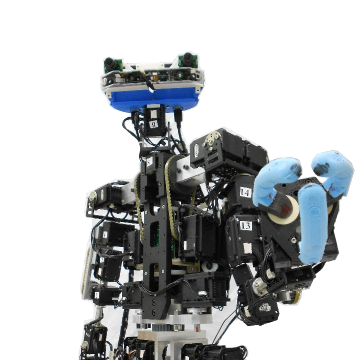

Work Experience
-

June 2014 - July 2019
Autonomous Systems Engineer
At Intel Labs, Intel Corporation, Mexico
Development and implementation of algorithms for Online Trajectory Planning and robust tracking control on palm-sized quadcopters. Worked both with very constrained embeeded systems, as well as with powerful computing units equiped with cutting edge hardware accelerators for computer vision and machine learning. Won the Hi5 Award 4 times in a course of ~3 years as a result of 21 filed patent applications.
-

January 2015 - June 2015
Embedded systems Intern
Freescale Semiconductor, Mexico.
Developed multiple reference designs for Bluetooth Low Energy using Freescale's boards and software stacks.
-

20152016
Research Intern (Electronics Department)
Western Institute of Technology and Higher Education (ITESO)
Participated in the research of a new design of a GFSK demodulator for Bluetooth with Dr. Omar Longoria
-
2015
Research Intern (Math Department)
Western Institute of Technology and Higher Education (ITESO)
Participated in a research work about the study of electrostatic fields as stochastic processes in precense of uncertainty with Dr. Gabriel Gonzales.